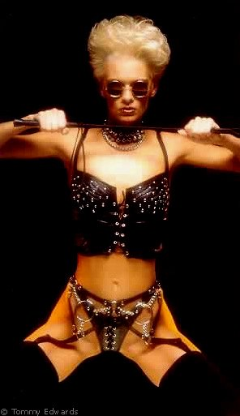

zahrano v Myslechovicich 7.02.2004
zapis a kresby :
ADB IdeaLibrary a handheldu DellAxim X5
(omluvte prosim snizenou kvalitu zaznamu)
stranka vytvorena v
PSpadu
harry, barry, gary, terry, carey, mary
predesly run - Hradec Kralove 2063 - leden
Olomouc --> London-brezen 2063

Gotic-SM party nekde kus od Londyna.
Prsi, jak take jinak. Navic je mlha smradlava tak, ze clovek neciti v puse ani chut cigara.
Misto konani je divnej barak, kterej se vubec nehodi k tomu co se deje vevnitr, ale mozna i to ma smysl.
V tyhle posrany zemi se stale jeste jezdi v levo, maj tu kralovnu, snemovnu lordu a me chute jsou nelegalni. Snad prave proto tak hezkej barak
Welcome home.
Koupism si na baru nejakej herojin a trosku strachu. Uz dlouhpo jsem nic nemel.
Ostatni se o postaraji o obchod, ja si jdu odpocinout.
Nas NickelfPolozmrd ma problem. chtel by z5 do sveho rodneho Londyna nad Temzi. jenomze neni to tak snadny, jak by si jeden myslel. mesto si pamatuje dost dlouho, zvlast prasata jeho kalibru. takze driv, nez vjede do mesta na sivem koni, mame o volny cas postarano.
je nas 5:
Ian [JenDva] - rigger
Vlad Ghostman [ja] - decker
Sedrick - zbrane, charisma, mozek
Garnath Langusta - arabsky militant
Dimitri Oboukov - novej, Rus, pry docela dobre ridi
nas cil: organisace podobna klasicke kriminalni spolecnosti z dob al Caponeho, ovladajici jednu cast Londyna.
konkretne sest bossu, kteri musi umrit. vsichni v jeden okamzik, jinak se rozleti jako hejno vrabcu a zmeni se na roj srsnu.
Harry - matrixovy rytir ve zlate zbroji, pedantsky, neprijemny, prudic
Barry - kouzelnik, introvert se zajmem o vaznou hudbu a o umeni
Garry - lotinka, vypalne, tvar a hlas cele organisace. mafian stara skola.
Terry - zbrane a ware; tezka vaha, Garryho duvernik a pritel.
Carrey - drogy. bez staleho bydliste. SMsex. rychla sportovni auta.
Mary - prostituce. mlada, hezka, schopna, ambiciozni.
Pekne Nicku, hezky sis to vymyslel.
6 na 5. o nedostatku magicke podpory a penez v nasem teamu nemluve. zoufala situace, tak to mam rad.
Nastesti mame krysu.
Carreyho chlap; hlupak ktery si mysli, ze ma na vic.
takze mame napichnuty soukromy telefonni-trixovoy uzel. Hmm, kam vsude dnes ty krysy nevlezou...
Datove toky jsou mimo me schopnosti, jsou prilis velke a dobre chranene, ale telefony jsou moje.
kazdy den alespon jeden hovor, typu:
Garry: "V East Endu nekdo chce nasi dodavku, Terry posli tam nekoho prosim."
Terry: "jo, hned to bude. zadnej problem."
nebo
Marry: "Barry co mam proboha delat, on tady chcipnul. Je celej jedna velka modrina -tak to chtel, kurva- a je uplne tuhej. Co mam proboha delat, oni uz sem jedou."
Barry: "To zvladnem. klid, klid. tak radni Fulgum rikas? hmm. uz jsem na ceste."
stop pribyva, sice pomalu, ale utesene.
vime kde bydli Carrey, Marry, Terry a Garry. Nevime nic o Barrym a Harrym. dokonce uz si pamatujem, ktery jmeno je kdo. ;]
Vime ze Terry se mota s Garrym a ze je rychlej.
Carrey suka [?] s Marry v privatnim bordelu U Mareny v Neckach, kde se take jednou ukazalo Barryho auto.
Za tyden sledovani jsme meli moznost seznamit se i s jejich nepratelskou organisaci.
Nedaji se pouzit zda se. Zvlast po tom zatahu, kterym je nase sestice prekvapila.
Policejnimu nacelnikovi se vcera vnoci u Marusky v neckach asi vazne libilo.
Dalsi vec, ktera by se mohla hodit. Garry a Terry chodi kazdou stredu na strelnici a kazdy patek na golf.
Marry chodi kazde pondeli a stredu do Solaria.
Co ale delaj kouzelnik s deckerem? Kde jsou? zadna sledovacka z trixu ani v reale nebyla uspesna. Nas Harry je fakt dobrej. zlaty rytir na cernem koni drti sve nepratele mocne a statecne. Nemam na nej v sile, ale nevi o me....... hmm, tak vezak v obchodni ctvrti. Dobre. Co jeste o tobe vime, parchante....
pizzeria? pohoda, kazdej den stejna? fuj s ancovickama. diky. to staci.
No a co s Berrym kouzelnikem?
Bydlime u Timmyho.
Jo to je takovej ten chlapek, co se z nej jezej kouzelnici. kamos mi kdysi rikal, ze by to moh bejt nejakej haluzak ze dvacatyho, co desne fetoval, kdyz umrel nechal zmrazit hlavu, aby se dozila tyhle smradlavy doby. tusim, ze se to nepovedlo, ale Timmy je vazne divnej.
Myslim, ze z Timmiho je puvodni jen mozek. Nikdo jinej nema v tele tolik dratu. Nikdo. Obcas z nej mivam spatnej pocit, kdyz na me reproduktor u stropu promluvi, at donesu novou sadu oci a mikropajku...
No a bydli tu s nama uz nejakou dobu nekdo novej. Dereck. Taky dobra obluda.
Tak petactyricet, dve nezakryty kyberpaze omotany kobercovkou hadry z vojenskeho vyprodeje.
Zameta nebo vari vajicka se slaninou a cerny kafe. Skoro nemluvi, snad jen na Sedrika. parkrt jsem je slysel, kdyz jsem rano tisknul vysledky nocniho pruzkumu.
Bavili se o magickejch vecech. Sedrik jej chtel na nasi stanu. ma recht, potrebujem kouzelnika, porad nevime kde je Barry.
Dereck byl tvrdej orisek, ale nakonec se rozhod, ze to znovu zkusi.
po dvaceti letech se vrati do rovin duchu a energii.
chapal jsem jej. obcas se mi po nocich zdava, ze jsem ztratil schopnost pracovat s matrix. budim se zpoceny a ruce s jackem se mi klepou.
on v tom snu zije uz 20 let. nastesti ale ani on nechce zit vecne.
dalsi dny byly napjate, Dereck se snazil sec mohl, ale slo to pomalu.
Tuhle stredu by se to mohlo stat.
Terry a Gerry jedou nejdrive na predavku drog na Prumyslove Letiste. Bude tam i Carrey.
Mary by mela byt v solarku.
Harryho vzdycky najdu na siti. Vsichni budou k dispozici, zbyva kouzelnik.
Kde je?
Kde?
Dereck ho ma.
Ja taky.
Zatim se jeste nikdy nestalo, ze by na soukromy telefon nekoho ze sesti prislo neco z venku. ne tak dnes.
SMS pro: Barry Livingstone
text: "Invisible Galery. TT."
Invisible Galery ma dobrej server, muzou si dovolit vynucenej vzhled, hezkej.
kostka, tak 5x5x5m. cela pokryta zrcadlem. neprostupna a dokonala.
Myslenka: Stojis pred zrcadlem...nevidis v nem svuj odraz...rozbijes si nos o sklo, kdyz vykrocis vpred?
Povedlo se. neviditelna persona prosla zrcadlem.
obsah kostky vsechno o projektu neviditelnych galerii, ktere se v okolnim trixu zdaji byt mestskou legendou.
nelegalni, sokantni, arogantni umeni schovane na nejverejnejsich mistech.
nejblizsi vystava... ve stredu? ve stredu!
Asi si koupim diar.
Streda - plan:
Pes Packa:
16:00 - Mary vystupuje z auta pred Solariem a pes ji roztrhne hrdlo - akce zacina!!!
Vlad:
11:00 - obednat poslicka a pizzu
12:00 - dorucit pizzu s uspavacim praskem Harimu
16:00 - zabit mladika fyzicky nebo matrixove
Garnath Langusta:
15:00 - Carrey, Gary a Terry prebiraji drogy na Prumyslovem letisti.
16:00 - vymenuji zasobniky na strelnici [Strilet se muze jen u nas zakoupenou munici. dekujeme.] - vrazda, smrt, zabiti
Dmitrij:
15:00 - Carrey, Gary a Terry prebiraji drogy na Prumyslovem letisti.
15:45 - vyprovokovat Carreyho k zavodum po meste. Carrey musi zemrit presne v 16:00
Sedrick:
15:55 - pouzit ziskany kod pro vstup do Invisible Galery.
16:00 - strelit do hlavy maga, zaujateho vystavou, mozna i nejakou Dereckovou aktivitou
Pes Packa a jeho cast planu si zaslouzi blize popsat.

casto se rika: "jaky pan takovy pes". v tomto pripade prislovi nelze.
Timmy nasel Packu v zubozenem stavu na smetisti, kam jej vyhodil nekdo pote, co jej prejelo auto, a zlamalo mu vetsinu kosti v tele.
Packa jeste zil a tak Timmy improvizovane opravil zubozene psi stvoreni za pomoci kovu a plastu, stejne jako to delal sam se sebou.
Vyplatilo se. Packa je nejlepsi pritel jakeho si Timmy mohl prat, a taky nejrychlejsi. ;]
Packa miluje, kdyz se muze hnat za specialni skakaci kulickou 80km/h rychlosti. packa miluje lov na auta [ktera casto chyti] a Packa miluje Timmyho pratele.
obcas jej chodime vencit.
Cast planu pocitala s tim, ze Sedrick v pondeli navstivi Solariumm, kde Mary sebere kousek obleceni. Podle jeho pachu navedem rizenou strelu znacky Packa.
[No, myslim, ze nemusel prinest zrovna kalhotky, ale ta cervena krajka se mi taky libila.]
Pes zacne akci. Nic necekajici Mary by jej nemela ohrozit.
Pak uz kazdy na sve triko. V 16:00 musi na zem dopadnout 6 mrtvych tel. za kazdou cenu. Jestli ne, uz nikdy nebude prilezitost to zopakovat a uz nikdy neuvidime obsah jejich trezoru.
Streda - beh:
Pes Packa:
16:00 - Mary vystupuje z auta pred Solariem a pes ji roztrhne hrdlo - akce zacina. jak je psano, tak se stalo.
Vlad:
11:00 - obednat poslicka a pizzu - hotovo
12:00 - dorucit pizzu s uspavacim praskem Harrimu - doruceno, bez problemu. Harry je plesata, hubena bleda troska.
16:00 - zabit mladika fyzicky nebo matrixove - mladik 15:32 usina aniz by se odpojil z trixu. Zlaty rytir, sestoupil z kone aby se vymocil. muj rezavy nuz nasel presne tu zpravnou mezeru mezi platy. zezadu.
Garnath Langusta:
15:00 - Carrey, Gary a Terry prebiraji drogy na Prumyslovem letisti. - tak se stalo
16:00 - vymenuji zasobniky na strelnici - vrazda, smrt, zabiti
- velka chyba, protoze uz 15:28 jsou oba bossove v casti strelnice urcene pro tezke pistole. Langusta je nasleduje. 4 lide, utocnik, 2 obeti, 1 neviny. to pujde.
Slo. Terryho zasahly kulky tak necekane, ze mu nemohly ani jeho nelidske reflexy. Garry panikari a pousti zbran. Kulka uprostres cela a druha do krku.
Nevinny se pokousi o strelbu. Uz neni nevinny. Utek se zdaril, bez odporu.
Dmitrij:
15:00 - Carrey, Gary a Terry prebiraji drogy na Prumyslovem letisti.
15:45 - vyprovokovat Carreyho k zavodum po meste. Carrey musi zemrit presne v 16:00. - tak se i stalo. rozjety dealer jeste ustal nareaz do kandelabru, ale rusovu kulku do xichtu uz ne. RIP.
Sedrick:
15:55 - pouzit ziskany kod pro vstup do Invisible Galery.
16:00 - strelit do hlavy maga, zaujateho vystavou, mozna i nejakou Dereckovou aktivitou.
Tak se i stalo. obsah magovy hlavy, spolu s kousky flesetove munice, sampanskeho a skla znicil jiste vzacny obraz od skupiny TT.
utek.
A je to. Nick Slaughterhouse se muze vratit do mesta s velkou paradou. 5mega za soubory v sejfu, taky neni spatny zacatek zdraveho vztahu.
Dale nasledovala uz jen sladka odmena a spousta noci z hvezdickou. Londynsky zlocin je nam priznive naklonen.
Navic zdedit bordel Marena v Neckach je zavazek ;]
Jaka z pribehu muzem vyvodit ponauceni?
Kedna krysa zmuze mnoho.
Doby plan a moment prekvapeni vydaji za armadu.
Vypaleni kouzelnici nechteji zit vecne.
Pes je nejlepsim pritelem cloveka.
12.2.2004 1:03:46

{kind=link}
{kind=link}